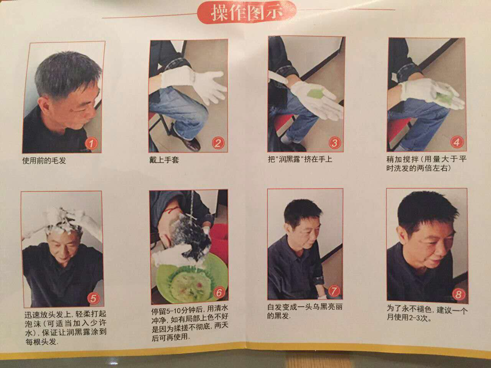
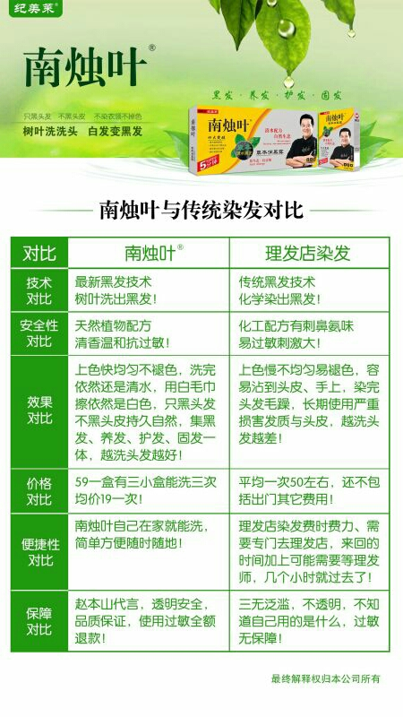

南烛叶草本润黑露纯天然，不刺激，使用起来方便，清水洗头，取适量产品在头发上搓揉起泡沫，等个十分钟后清水洗掉就可以了，而且它的好处就是，南烛叶只黑头发，不黑皮肤，不脏衣领枕头，对！就是这么神奇，你也不用天天使用，洗一次只需等白头发长出来，在使用即可！具体代理价格，产品使用方法均在朋友圈，欢迎咨询
南烛叶操作就像平时洗发一样简单：将头发润湿即可，双手戴上手套，把袋南烛叶挤入手上稍加搅拌(用量大于平时洗发的两倍左右；迅速放到头发上，清柔打起泡沫，保证让润黑露图到每根头发。揉搓5-10分钟后用清水冲净，白发变成一头乌黑亮丽的黑发。南烛叶里面含多种天然植物乌饭树的提取液，有效保护头发，令头发持久柔软光泽。
南烛叶草本润黑露因为它所具有的优势，很多的人都加入到代理中，只要凭借我们自身的努力，那么就可以获得成功，这款产品在黑发的过程中不会出现过敏的现象，也不会伤到我们的头皮，能够帮助我们展现自然黑，因此代理这一款产品没有任何的压力，也不会出现囤货的一个情况，让我们轻轻松松的可以创业，代理咨询微信:
南烛叶清水配方，植物黑发，5分钟洗发，清洁头发同时达到染发效果，令头发瞬间乌黑亮丽！天下儿女一份孝心！